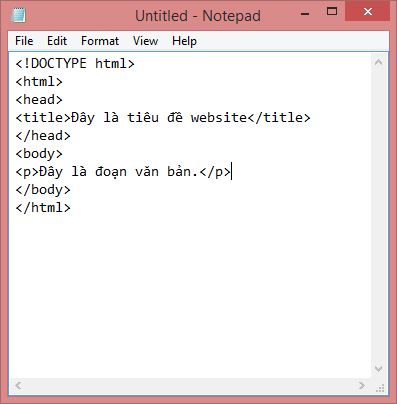
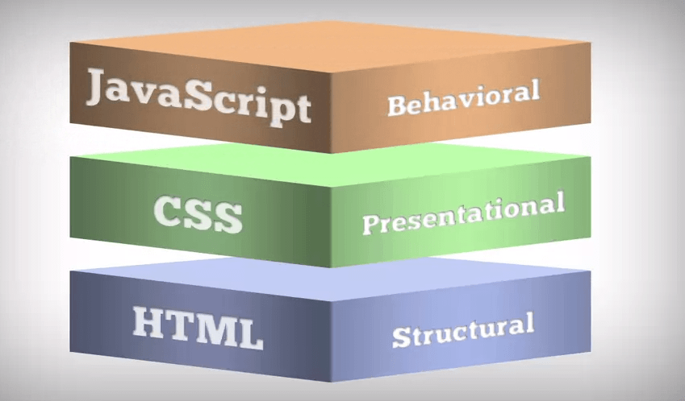

Lab 2: Giới Thiệu HTML
HTML là chữ viết tắt của cụm từ HyperText Markup Language (dịch là Ngôn ngữ đánh dấu siêu văn bản) được sử dụng để tạo một trang web, trên một website có thể sẽ chứa nhiều trang và mỗi trang được quy ra là một tài liệu HTML (thi thoảng mình sẽ ghi là một tập tin HTML). Cha đẻ của HTML là Tim Berners-Lee, cũng là người khai sinh ra World Wide Web và chủ tịch của World Wide Web Consortium (W3C – tổ chức thiết lập ra các chuẩn trên môi trường Internet).
Một tài liệu HTML được hình thành bởi các phần tử HTML (HTML Elements) được quy định bằng các cặp thẻ (tag), các cặp thẻ này được bao bọc bởi một dấu ngoặc ngọn (ví dụ < html>) và thường là sẽ được khai báo thành một cặp, bao gồm thẻ mở và thẻ đóng (ví < strong> dụ và ). Các văn bản muốn được đánh dấu bằng HTML sẽ được khai báo bên trong cặp thẻ (ví dụ < strong>Đây là chữ in đậm). Nhưng một số thẻ đặc biệt lại không có thẻ đóng và dữ liệu được khai báo sẽ nằm trong các thuộc tính (ví dụ như thẻ < img>).
Một tập tin HTML sẽ bao gồm các phần tử HTML và được lưu lại dưới đuôi mở rộng là .html hoặc .htm.
Khi một tập tin HTML được hình thành, việc xử lý nó sẽ do trình duyệt web đảm nhận. Trình duyệt sẽ đóng vai trò đọc hiểu nội dung HTML từ các thẻ bên trong và sẽ chuyển sang dạng văn bản đã được đánh dấu để đọc, nghe hoặc hiểu (do các bot máy tính hiểu). Để kiểm tra, bạn có thể sử dụng khung nội dung bên dưới và chuyển qua lại giữa phần HTML và Result để xem kết quả của một tập tin HTML sau khi được xử lý.
Như mình đã nói ở trên, HTML sẽ được khai báo bằng các phần tử bởi các từ khóa. Nội dung nằm bên trong cặp từ khóa sẽ là nội dung bạn cần định dạng với HTML. Ví dụ dưới đây là một đoạn HTML khai báo một đoạn văn bản. 01 < p>Đây là một đoạn văn bản trong HTML.< /p> Ngoài ra, trong các thẻ còn có các thuộc tính, thuộc tính sẽ đặt bên trong thẻ mở đầu, mỗi thuộc tính sẽ có giá trị được đặt trong dấu ngoặc kép và cách nhau bởi dấu bằng (=) với tên thuộc tính. Ví dụ dưới đây là một thẻ có sử dụng thuộc tính- 01 < form action="https://thachpham.com"> < /form> Một thẻ có thể sử dụng nhiều thuộc tính chứ không phải chỉ một thuộc tính nhé.
HTML là một tập tin siêu văn bản nên bạn có thể dùng các chương trình soạn thảo văn bản không có chức năng định dạng văn bản để tạo ra một tập tin HTML. Trong Windows, bạn có thể dùng Notepad, Eclipse, Netbeen, Subline Text... để tạo ra một tập tin HTML, còn trên Mac thì có thể dùng TextEdit và Vim trên các hệ điều hành Linux khác. Miễn là sau đó bạn phải lưu tập tin thành đuôi .html và sử dụng trình duyệt website để đọc nó.

Truy cập tại đây để có thể nắm được hết các thẻ trong html ! Và những tùy biến trong html một cách đầy đủ nhất !
Như mình đã nói, HTML là một ngôn ngữ đánh dấu siêu văn bản nên nó sẽ có vai trò xây dựng cấu trúc siêu văn bản trên một website, hoặc khai báo các tập tin kỹ thuật số (media) như hình ảnh, video, nhạc.

Điều đó không có nghĩa là chỉ sử dụng HTML để tạo ra một website mà HTML chỉ đóng một vai trò hình thành trên website. Ví dụ một website như Thachpham.com sẽ được hình thành bởi:
Nhưng ở đây, tạm thời bạn chỉ cần quan tâm đến HTML mà thôi. Dễ hiểu hơn, bạn hãy nghĩ rằng nếu website là một cơ thể hoàn chỉnh thì HTML chính là bộ xương của cơ thể đó, nó như là một cái khung sườn vậy.
Như vậy, dù website thuộc thể loại nào, giao tiếp với ngôn ngữ lập trình nào để xử lý dữ liệu thì vẫn phải cần HTML để hiển thị nội dung ra cho người truy cập xem.
Website tĩnh (static web) – Là một website không giao tiếp với máy chủ web để gửi nhận dữ liệu mà chỉ có các dữ liệu được khai báo sẵn bằng HTML và trình duyệt đọc.
Website động (dynamic web) – Là một website sẽ giao tiếp với một máy chủ để gửi nhận dữ liệu, các dữ liệu đó sẽ gửi ra ngoài cho người dùng bằng văn bản HTML và trình duyệt sẽ hiển thị nó. Để một website có thể giao tiếp với máy chủ web thì sẽ dùng một số ngôn ngữ lập trình dạng server-side như PHP, ASP.NET, Ruby,..để thực hiện. Ví dụ như một website làm bằng WordPress là website động.